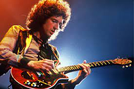
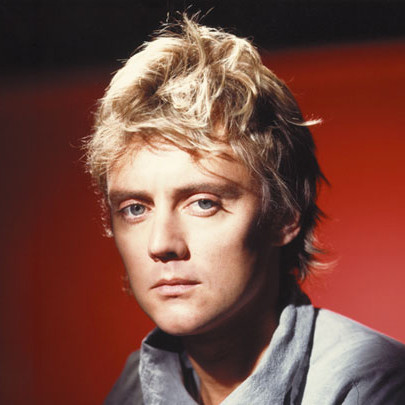
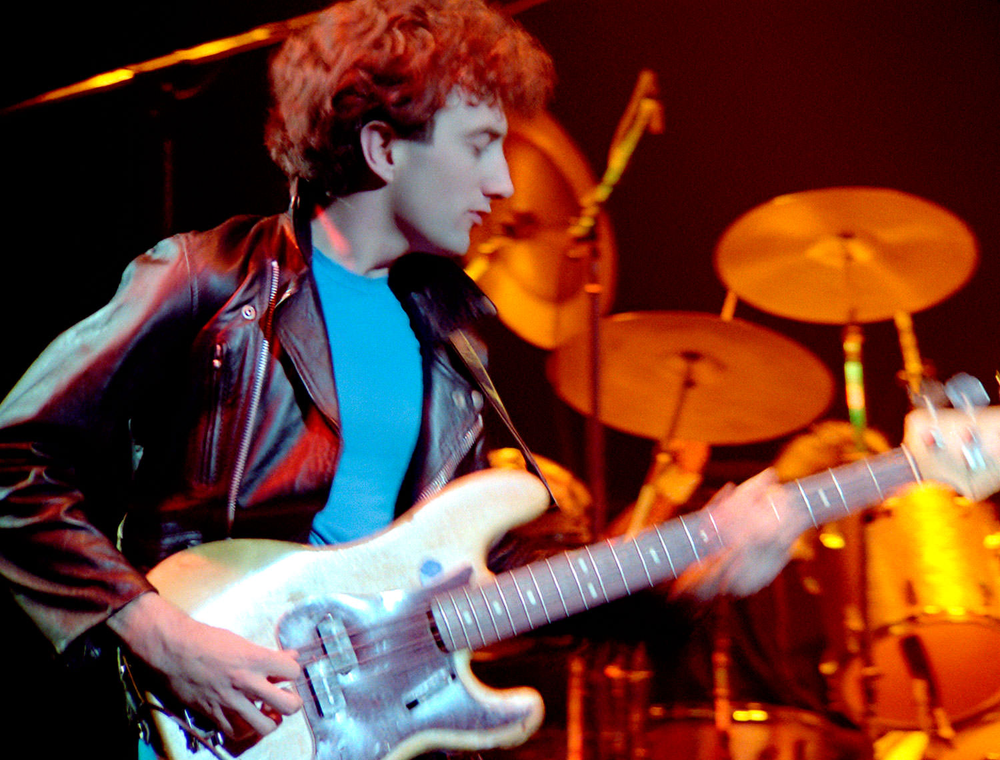

Banda Queen
Queen es una banda británica de rock formada en 1970 en Londres, integrada originalmente por el cantante y pianista Freddie Mercury, el guitarrista Brian May, el baterista Roger Taylor y el bajista John Deacon (él cual llegaría un año después al grupo para completar la formación clásica). Sus primeros trabajos estuvieron influenciados por el rock progresivo y el hard rock, pero la banda se aventuró gradualmente en trabajos más convencionales y amigables con la radio, incorporando más estilos como el arena rock y el pop rock.
Antes de formar Queen, May y Taylor habían tocado juntos en la banda Smile. Mercury se apegó a la banda y les animó a experimentar con técnicas escénicas y de grabación más elaboradas. Se unió en 1970 y sugirió el nombre de «Queen». Deacon fue reclutado en febrero de 1971, antes de que la banda lanzara su álbum debut homónimo en 1973. Queen apareció por primera vez en las listas de éxitos del Reino Unido con su segundo álbum, Queen II, en 1974. Sheer Heart Attack más tarde ese año y A Night at the Opera en 1975 trajeron con ellos, el éxito internacional. Este último presentó Bohemian Rhapsody, que se mantuvo en el número uno en el Reino Unido durante nueve semanas y ayudó a popularizar el formato de vídeo musical.
| Freddie Mercury | Brian May | Roger Taylor | John Deacon |
 |
 |  |  |
Para más información haz clic Aquí